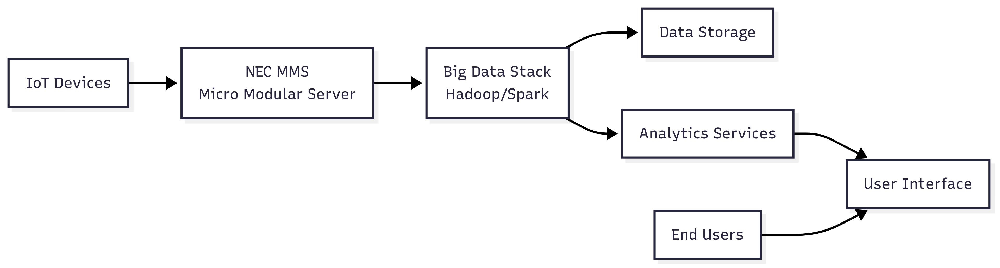

NEC IOT BIG DATA PLATFORM
A project to deploy big data technology stack on NEC's Micro Modular Server (MMS), providing end users with powerful analytics capabilities while abstracting system complexities. Enabled scalable, user-friendly big data solutions for IoT applications.
Designation
Senior Software Engineer
Technologies
Hadoop
Spark
Python
NEC MMS
Big Data Stack
Role
- Designed and implemented big data processing pipelines for IoT sensor data
- Developed real-time analytics solutions using Hadoop and Spark ecosystems
- Integrated NEC MMS platform with big data infrastructure
- Optimized data processing workflows for high-volume IoT data streams
- Established data quality monitoring and validation frameworks
Key Contributions & Impact
- Deployed and configured big data stack on NEC's Micro Modular Server for IoT analytics.
- Abstracted system complexities, enabling end users to leverage big data without deep technical knowledge.
- Enhanced accessibility and scalability of big data resources for IoT use cases.
Architecture Diagram & S.O.L.I.D. Design Principles
Architecture Diagram

S.O.L.I.D. Design Principles
- Single Responsibility: Data collection, preprocessing, analytics, and alerting are handled by dedicated modules for maintainability.
- Open/Closed Principle: The system supports new sensor types and analytics features by extension, not modification.
- Liskov Substitution: All data processors and analytics modules implement a shared interface, allowing for easy upgrades and replacements.
- Interface Segregation: APIs for device management, analytics, and reporting are kept distinct for clarity and security.
- Dependency Inversion: Core logic depends on abstractions, with data sources and external integrations injected as dependencies.